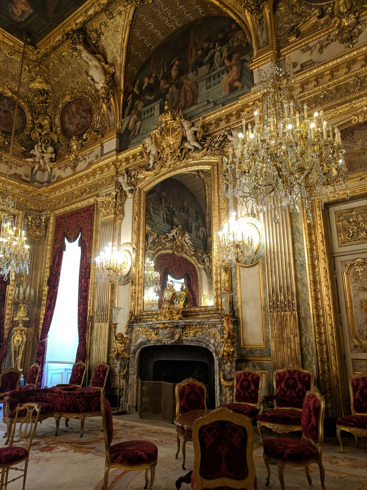

A vida no castelo é tranquila, mas você sente que algo está faltando. Uma noite, você tem um sonho misterioso sobre uma grande ameaça que se aproxima do reino. Ao acordar, você decide agir.
A floresta é escura e cheia de perigos, mas você é corajosa. No meio da floresta, encontra um velho druida.

O conselho sugere que você organize uma missão para investigar a ameaça. Você pode escolher como deseja liderar a missão.
O druida revela que uma criatura das trevas está se aproximando e só poderá ser derrotada com a ajuda de um artefato antigo escondido no castelo.
O druida entrega uma espada encantada, mas alerta que ela só será eficaz se você for capaz de controlar seu poder.